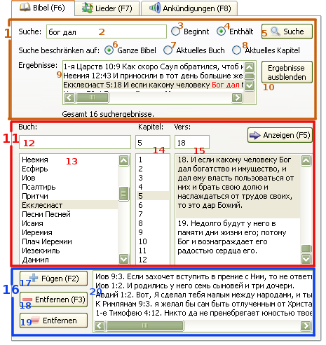

2.2 Anzeigen der Bibelverse
softProjector kann gleichzeitig nur einen Bibelvers anzeigen. Eine Option für das Anzeigen mehrerer Verse - ist eine Sache der Zukunft. Es kann auch der gleiche Bibelvers aus zwei verschiedenen Bibelversionen angezeigt werden.
Für das Anzeigen des Bibelverses:
Man kann auch ein Buch über den Filter (12) in dem Fenster über dem Buchverzeichnis der Bibel wählen.
oder geben Sie manuell eine Nummer des Kapitels in dem Text-Fenster über dem Kapitel-Verzeichnis.
oder geben Sie manuell eine Nummer des Verses in dem Text-Fenster über der Vers-Spalte.
Nachdem ein gesuchter Vers gewählt wurde,
drücken Sie den "Anzeigen" -Knopf, oder doppelklicken Sie mit der Maus auf den Vers.

1. Suche in der Bibel:
Hier kann man einen Vers nach Phrase oder Wort suchen/finden.
Hierhin werden Worte/Phrasen für die Suche eingefügt. Das Such-Fenster ist zum Register empfindlich und alle Zeichen, außer Buchstaben-Zahlen, werden automatisch entfernt.
Suche nach Versen, die mit der/dem angegebener/m Phrase/Wort anfangen.
Suche nach Versen, die das/die angegebene Wort/Phrase enthält. Gleichzeitig werden auch Verse gefunden, die mit der/dem angegebener/m Phrase/Wort anfangen.
Beim drücken dieses Knopfes werden Suche in der Bibel und Anzeigen der Ergebnisse im unteren Fenster durchgeführt.
Suche wird in der ganzen Bibel durchgeführt.
Such wird in dem gewählten Buch durchgeführt.
Suche wird nur in dem gewählten Kapitel durchgeführt.
In diesem Fenster werden die Ergebnisse der Suche angezeigt. Die für die Suche angegebenen Worte/Phrasen werden mit rot gekennzeichnet. Aber Phrasen, die Zeichen wie Punkt, Komma oder nicht alphabetisch-nummerische Zeichen enthalten, werden nicht immer rot gekennzeichnet, obwohl diese in dem Fenster der gefundenen Verse angezeigt werden. Z.B.: Suche eine Phrase "und Gott" wird nicht mit rot gekennzeichnet, obwohl das Ergebnis mit und, Gott" angezeigt wird.
SoftProjector kann nicht mehr als 281 Verse als Ergebnis herausgeben. Während dessen wird unter dem Fenster der gefundenen Versen die Anzahl angezeigt sowie die Limitüberschreitung, wenn dies der Fall wäre. Bei einer Limitüberschreitung muss das/die gesuchte Wort/Phrase geändert oder eine andere Suchoption verwendet werden.
Double-click the a verse and it will sent selected verse to be shown.
Beim drücken dieses Knopfes verschwindet das Fenster mit den gefundenen Versen.
11. Block der Bibelbetrachtung:
In diesem Block kann man die Bibelverse vor dem Anzeigen auf der Leinwand betrachten und vorbereiten.
Man kann eine Bibelstelle sehr schnell finden, indem man den Namen des Buches, Kapitel und Vers (getrennt durch ein Lehrzeichen) (" ") in dieses Fenster einfügt. Das Programm findet den gesuchten Vers automatisch. Nachdem der Vers gefunden wurde, drücken Sie "F5" oder klicken Sie auf den "Anzeigen" -Knopf.
Es ist nicht unbedingt nötig, den vollen Name eines Buches der Bibel einzugeben. Es ist genügend, ein paar Anfangsbuchstaben einzugeben, wie z.B.: matfür Matthäus. Falls ein Buch eine Zahl hat, so ist dieses mit einem Lehrzeichen einzugeben, d.h. für die Suche 1. Korinther: verwenden 1kor statt 1 kor . Beispiele für eine richtige Eingabe: da 3 12 für Daniel 3:12; 1the 5 8 für 1. Thessalonicher 5:8 usw.
Enthält entweder eine Liste aller Bücher der Bibel oder nur die, die in das Fenster der Bücherwahl eingegeben worden sind.
Eine Nummer des Kapitels kann man entweder im Fenster eingeben oder aus dem Verzeichnis wählen.
Eine Nummer des Verses kann man entweder im Fenster eingeben oder aus dem Verzeichnis wählen.
Beim Doppelklick auf den Vers im Verzeichnis, wird der Vers in das Fenster des Bildschirmes übertragen.
16. Block der Geschichte und der provisorischen Aufbewahrung:
In diesem Teil werden Verse, die zum Anzeigen gesendet wurden sowie
hinzugefügt wurden mifhilfe des "Hinzufügen" -Knopfes.
Beim Drücken des "Hinzufügen" -Knopfes werden die oben gewählten Verse in das Geschichte-Verzeichnis hinzugefügt.
Beim Drücken des "Löschen" -Knopfes werden die gewählten Verse aus dem Geschichte-Verzeichnis gelöscht.
Beim Drücken des "Säubern" -Knopfes wird das komplette Geschichte-Verzeichnis entfernt.
Ein jeglicher Vers, der auf dem Bildschirm angezeigt wurde, wird in das Geschichte-Verzeichnis eingetragen und bleibt dort bis zu seiner Entfernung. Beim Doppelklick auf den Vers, wird dieser auf dem Bildschirm angezeigt, ohne der wiederholten Eintragung in das Geschichte-Verzeichnis.